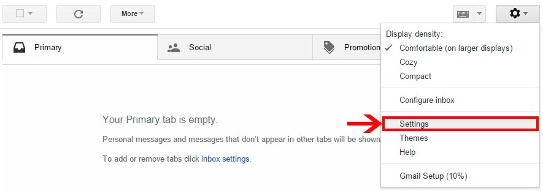

Example subtitle
An article review is both a summary and an evaluation of another writer's article. Teachers often assign article reviews to introduce students to the work of experts in the field. Experts also are often asked to review the work of other professionals. Understanding the main points and arguments of the article is essential for an accurate summation. Logical evaluation of the article's main theme, supporting arguments and implications for further research is an important element of a review. Here are a few guidelines for writing an article review.
Example subtitle
An article review is both a summary and an evaluation of another writer's article. Teachers often assign article reviews to introduce students to the work of experts in the field. Experts also are often asked to review the work of other professionals. Understanding the main points and arguments of the article is essential for an accurate summation. Logical evaluation of the article's main theme, supporting arguments and implications for further research is an important element of a review. Here are a few guidelines for writing an article review.
Example subtitle
An article review is both a summary and an evaluation of another writer's article. Teachers often assign article reviews to introduce students to the work of experts in the field. Experts also are often asked to review the work of other professionals. Understanding the main points and arguments of the article is essential for an accurate summation. Logical evaluation of the article's main theme, supporting arguments and implications for further research is an important element of a review. Here are a few guidelines for writing an article review.An article review is both a summary and an evaluation of another writer's article. Teachers often assign article reviews to introduce students to the work of experts in the field. Experts also are often asked to review the work of other professionals. Understanding the main points and arguments of the article is essential for an accurate summation. Logical evaluation of the article's main theme, supporting arguments and implications for further research is an important element of a review. Here are a few guidelines for writing an article review.
An article review is both a summary and an evaluation of another writer's article. Teachers often assign article reviews to introduce students to the work of experts in the field. Experts also are often asked to review the work of other professionals. Understanding the main points and arguments of the article is essential for an accurate summation. Logical evaluation of the article's main theme, supporting arguments and implications for further research is an important element of a review. Here are a few guidelines for writing an article review.
=======-

Click on tools button in the upper right corner
-

Select settings
-

Click on labs tab
1. Type undo in the search field
2. Click enable
3. Click save settings
You will now be sendt back to your inbox -

In the settings tab make sure that undo send is enabled. You can now choose the time you want availible for cancelation 5 - 30 sek in the drop down field.
-

Remember to save your changes
-

Ps! Gmail Labs is a testing ground for experimental features that aren't quite ready for primetime. They may change, break or disappear at any time.